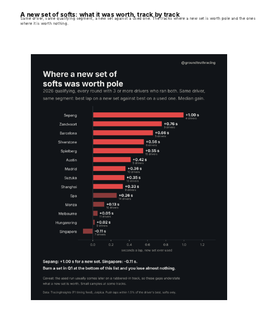
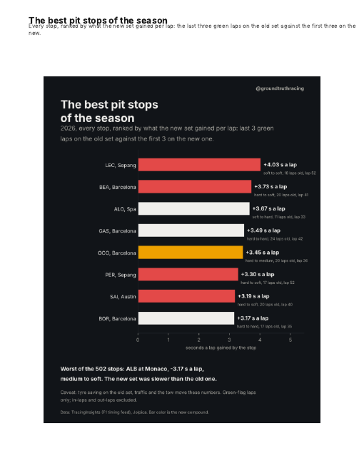
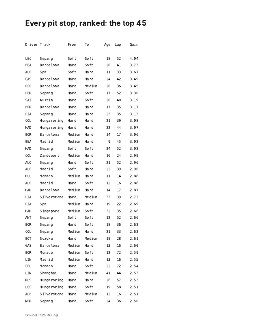

PDF, about 21 pages, letter size, prints clean
The 2026 Tyre Report
Where the season's lap time was really won, under the surface. Every card we posted, rebuilt for print, plus the tables nobody posts: every pit stop of the year ranked by what it gained, the longest stints on one set, and every team and driver by corner class.
The 2026 edition ships after Abu Dhabi, on December 8. Buying opens the same day.
Until then, the Race Weekend Brief is free every race week.
What is inside
- A new set of softs: what it was worth, track by track
- Track evolution: how much faster qualifying got
- The sets that wouldn't die
- The best pit stops of the season
- Where the tyres wore out fastest
- The crossover: slicks against wet tyres, lap by lap
- Who wins the corners, who wins the straights
- Who is fast where: every driver by corner type
- Same car, different corners
- We built a model. Here is its record
- Where the 2026 cars lost their time
- Monaco pole, 2003 to now
- The tables: every pit stop ranked, the thirty longest stints, teams and drivers by corner class
- Method and sources
Sample pages



How it is built
Every number is measured. Lap times, sectors, compounds and tyre ages come from F1's timing feed via TracingInsights; classifications from Jolpica; telemetry from TracingInsights and OpenF1. A track's road is cut into micro sectors from its 2025 pole lap, classed by minimum speed, so every car is measured on the same stretches of road. Nothing is simulated or estimated. Scales start at zero.
Questions before buying: a direct message to @groundtruthracing on Instagram. Not affiliated with Formula 1, the FIA or any team.